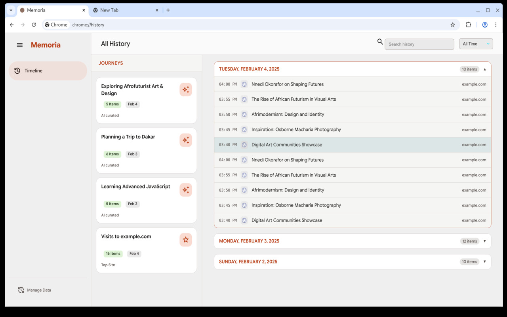
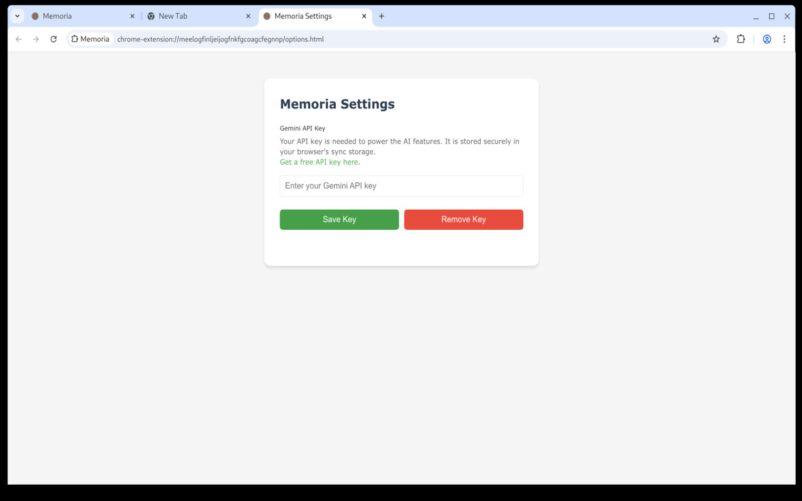

Memoria
Rediscover Your Browsing with AI Journeys
Memoria reimagines your browsing history as a series of AI-curated "Journeys," making rediscovery effortless and intuitive.
 Add to Chrome
Add to Chrome

Memoria reimagines your browsing history as a series of AI-curated "Journeys," making rediscovery effortless and intuitive.
Memoria intelligently groups your history by topic and task, not just time.
A clean, modern UI that loads instantly, replacing the default history page.
Quickly find any page across your entire history or within specific Journeys.
Your data is processed locally. Requires your own Gemini API key.
Memoria enhances your local Chrome history. To unlock the AI-powered Journey categorization, simply add your Google Gemini API key in the extension's settings. This keeps your browsing data private while giving you powerful organizational features.
